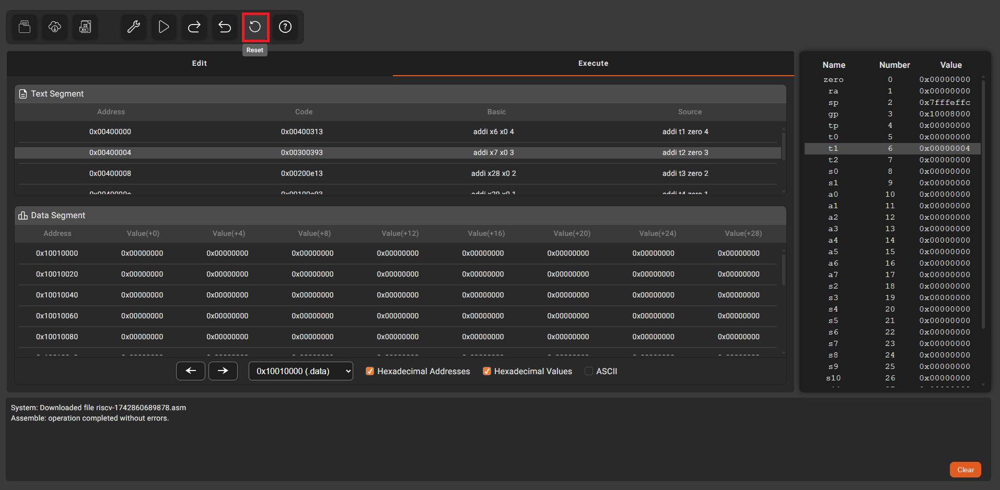

Consolidar o aprendizado da linguagem Assembly RISC-V e compreender como as instruções de suporte a procedimentos são executadas.
# ------------------------------------------------------------
# Exercício 07 - Versão RISC-V
# Trecho em C: int f = (g + h) - (i + j);
# ------------------------------------------------------------
.text
j main
leaf_example:
add a5, a1, a2 # a5 = g + h
add a6, a3, a4 # a6 = i + j
sub a0, a5, a6 # f = (g + h) - (i + j), resultado em a0
jr ra # retorna para o chamador
main:
addi a1, zero, 4 # g = 4
addi a2, zero, 7 # h = 7
addi a3, zero, 2 # i = 2
addi a4, zero, 1 # j = 1
jal leaf_example # chama a função
nop # a0 agora tem o valor de retorno (f)
Clique no botão Assemble para montar o programa.
Faça a execução passo-a-passo do programa e, a cada instrução, preencha a tabela abaixo cada vez que o valor de um registrador ou posição da memória de dados for modificado.
| Antes da execução da instrução |
Depois da execução da instrução |
||||||||
|---|---|---|---|---|---|---|---|---|---|
| PC | Instrução | f | g | h | i | j | |||
| R10 | R11 | R12 | R13 | R14 | R15 | R16 | R1 | ||
| (a0) | (a1) | (a2) | (a3) | (a4) | (a5) | (a6) | (ra) | ||
| 0x00000000 | 0x00000000 | 0x00000000 | 0x00000000 | 0x00000000 | 0x00000000 | 0x00000000 | 0x00000000 | ||
OBS: Salve o PDF em formato A2 e Paisagem para garantir que todas as informações da página fiquem visíveis
Se desejar reiniciar o programa, clique no botão Reset.
